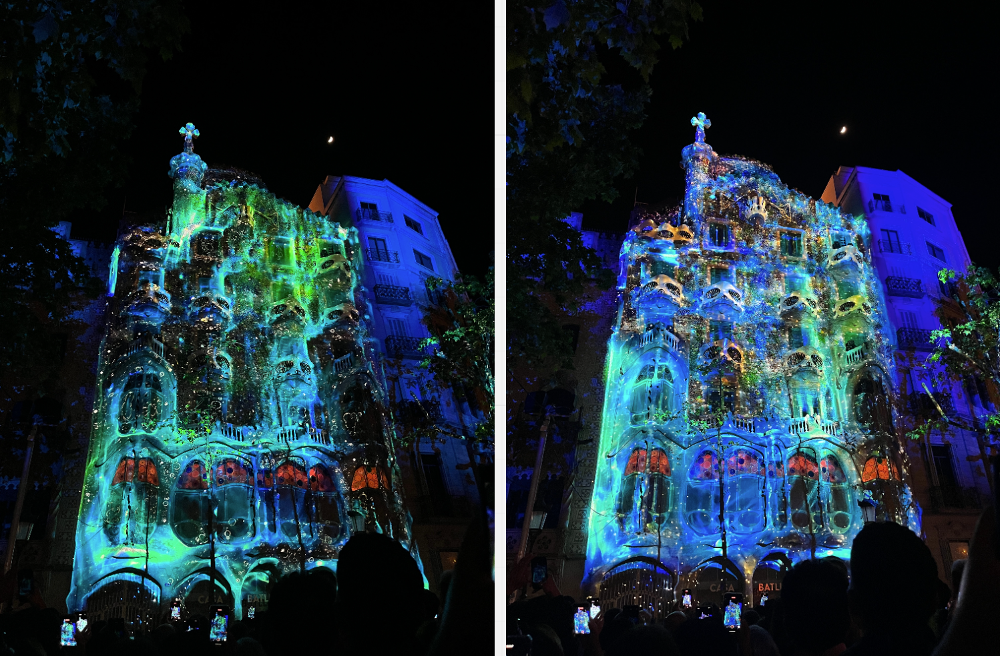
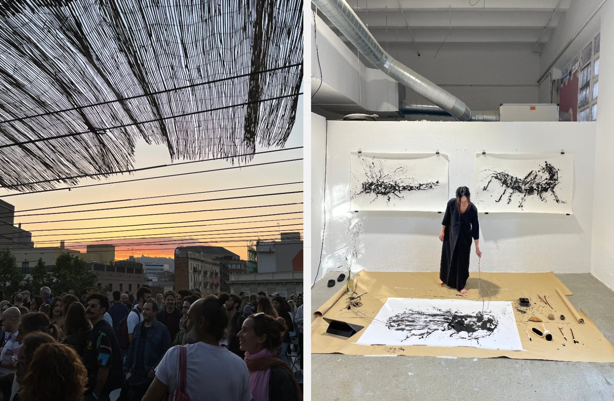

Fabchallenge week, find the post here.
Busy weekend, full of "reverse design interventions".
35mm photography exhibit
Free beers! Interesting photos.
Poblenou Open day
With Pippa, I walked around Poblenou to take a look at what the different business and institutions had to offer. We headed to Angel's exhibition first, where she painted insects using different objects while insect sounds played. On her hand, she wore a wearable made by Vikrant, which changed the insect sounds based on the light, according to her hand position and movements. It was beautiful to see her move and work.
We also passed by the VFX school, BAU and a few other businesses.

Casa Batllo videomapping
Absolutely mindblowing audiovisual experience. I felt very inspired by the projections' scale, intensity, shapes and colors. I also couldn't believe that the entire street was filled with people. This made me want to explore videomapping.

Solar Brunch
I was invited to take photos of the girls event, but it was super interesting to see the kind of people who came and what everybody had to say.